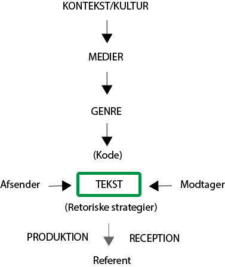

Grundlæggende Kommunikationsteori
Det humanistiske paradigme
Det humanistiske paradigme har fokus på modtageren, det er specielt områderne som psykologi, sprog, læring, kultur, kunst, informationsteknologi og en masse flere, indenfor modtageren. Det humanistiske paradigme bliver også kaldt for interaktionsparadigmet, da det er grundlagt, er til at optage interaktioner mellem mennesker. Her er de karakteristiske træk for det humanistiske paradigme
- Subjektivitet
- Fortolkning
- Kvalitativ tilgang
- Induktion
- Situationsbestemt
- Modtagerorienteret
- Iteaktion mellem mennesker
- Mennesket ses som aktivt
IMK-modellen (International Markeds Kommunikation modellen)
Afsender
Afsender er den er står bag alt kommunikationen, det er afsender der står med beslutterne som hvor og hvornår det skal sendes ud. Der findes to typer afsender:
Det primære afsender som kan være selve virksomheden.
Det sekundære afsender som kan være en specialist som laver f.eks. reklamen.
Modtager
Modtageren giver lidt sig selv, det er den er modtager den kommunikation som afsender sender ud. Her kan der også være en to typer modtager:
Den primære modtager
Den sekundære modtager
Som f.eks. kan være en reklame til Kattemad, den primære modtager er jo en kat, men fordi det er et dyr er den sekundære modtager ejerne af katten, altså personen er køber maden.
Teksten
Teksten er selve kommunikationen.
Referenten
Referenten giver lidt sig selv, det er alt det som teksten refererer til, det kan være et bestemt mærke man køber frem for andre selvom man udmærket godt ved at det ofte er det samme der er i begge varer.
Koden
Koden er det sprog som teksten blive skreven i, det er ikke kun sprog som i Dansk, engelsk og tysk men det kan også være det andet typesprog, som f.eks. IT-eksperter kun vil kunne forstår hvis de var modtageren eller ungdomssprog hvis modtagerne var unge mennesker.
Kontekst/kultur
Under kontekst og kultur for man svar på hvem, hvad, hvor og hvornår. Det er også her man tager høje for hvilken kultur man rammer og om man gør det rigtigt, det var rigtig afgørende når man skal vælge medie, genre og retoriske strategier.
Medier
Medier vælger man ud hvordan man vil komme ud med budskabet, hvordan man helt præcis rammer den modtager man gerne vil havde fat på.
Genre
I genre begynder kontekst, kultur og medie at spille sammen.
Det samfundsvidenskabelige paradigme
Det samfundsvidenskabelige paradigme har mere fokus på afsenderen og deres placering i verden. De fagområder som de befinder sig i er Jura, samfundsvidenskab, sociologi, politik og økonomi og en masse flere. Det samfundsvidenskabelige paradigme tror på at verden er forudsigelig, det betyder at de planlægger med udgangspunkt i de faste strukturer og stabile omgivelser. Her er de karakteristiske træk ved dem:
- Objektivitet
- Forklaring
- Kvantitativ tilgang
- Deduktion
- Stabile omgivelser
- Afsenderorienteret
- Transmission
- Handlingsanvisende
- Modtageren ses som passiv
Lasswells formel
Harold D. Lasswell op fandt en formel, hvor han på en overskuelig måde kunne have fokus på afsenderen og selvom han have øje på modtageren.
Lasswell blev berømt på denne replik fra 1948 hvor man forklarer omkring formelen
“A convenient way to describe an act of communication is to answer the following questions:
- Who
- Says What
- In Which Channel
- To Whom
- With What Effect?”
Kilder: Kommunikation i muktimediedesign bogen.